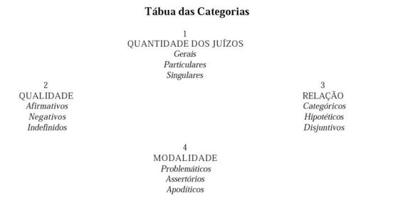
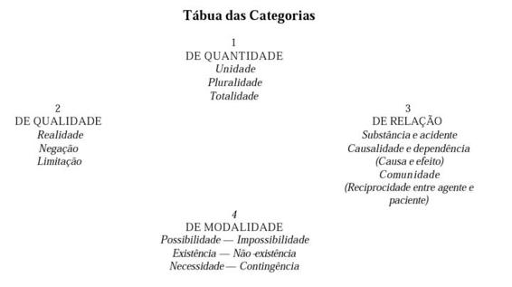

DA ANALÍTICA TRANSCENDENTAL
Analítica dos conceitos
Entendo por analítica dos conceitos, não a análise dos mesmos ou o método, geralmente seguido nas indagações filosóficas, consistente em decompor os conceitos que se apresentam para dar clareza ao seu conteúdo, mas a decomposição, ainda pouco intentada, da faculdade mesma do entendimento, para examinar a possibilidade dos conceitos "a priori" que buscamos somente no entendimento, como no seu lugar de origem, e considerar, em geral, a aplicação pura desta faculdade. Tal é o objeto da Filosofia transcendental; o restante é o estudo lógico dos conceitos, tal como se usa na Filosofia.
Seguiremos os conceitos puros até as suas raízes ou seus primeiros rudimentos, no entendimento humano, onde existiam precedentemente, à espera da experiência para o seu desenvolvimento e que, livres por esse mesmo entendimento das condições empíricas que lhes são inerentes, cheguem a ser expostos em toda a sua pureza.
CAPITULO 1
Orientação para a descoberta de todos os conceitos puros do entendimento
Ao exercitar a faculdade de conhecer em determinadas circunstâncias, apresentam-se diferentes conceitos que mostram a existência desta faculdade, e que podem ser expostas em uma lista mais ou menos extensa, segundo seja a sua observação mais detida e profunda. Não se pode assinalar, com segurança, o termo desta indagação, cujo procedimento é, para dizer assim, mecânico.
Existem também conceitos, que se descobrem só ocasionalmente, e que não estão em uma ordem dada nem em uma unidade sistemática. A ordenação destes conceitos só pode fazer-se mediante certas analogias e a importância de seu conteúdo, indo do simples ao composto; tal série nada possui de sistemático ainda que tenha sido realizada metodicamente.
A Filosofia transcendental tem a vantagem, e por seu turno a missão, de investigar estes conceitos, segundo um princípio porque procedem do entendimento puro e sem mescla alguma, como de uma unidade absoluta, e devem, por conseguinte, compor-se entre si sob um conceito ou idéia. Mas tal composição proporciona uma regra, segundo a qual o lugar de cada conceito puro do entendimento, e a integridade de seu conjunto, podem ser determinados "a priori", pois dependeriam do capricho ou do azar, em caso contrário.
Primeira Seção
Orientação Transcendental Para a Descoberta de Todos os Conceitos do Entendimento
Do uso lógico do entendimento em geral
O entendimento foi definido, antes, de uma maneira puramente negativa: uma faculdade de conhecer não sensível. Pois bem; como não podemos ter nenhuma intuição independente da sensibilidade, não é portanto o entendimento uma faculdade intuitiva. Mas fora da intuição, não há outra maneira de conhecer senão por conceitos. É, por conseguinte, o conhecimento do entendimento, pelo menos o do homem, um conhecimento por conceitos, quer dizer, não intuitivo, mas discursivo.
Todas as intuições enquanto sensíveis apóiam-se nas afeições, mas os conceitos supõem funções. Entendo por função a unidade de ação para ordenar diferentes representações sob uma comum a todas elas. Fundam-se, pois, os conceitos na espontaneidade do pensamento, do mesmo modo que as intuições sensíveis na receptividade das impressões. O entendimento não pode fazer destes conceitos outro uso senão julgar por seu intermédio.
Como nenhuma representação se refere imediatamente ao objeto, a não ser a intuição, nunca um conceito se referirá imediatamente a um objeto senão a qualquer outra representação desse objeto (seja intuição, seja conceito). O juízo é, pois, o conhecimento mediato de um objeto, por conseguinte, a representação de uma representação do objeto. Em todo juízo há um conceito aplicável a muitas coisas e que sob esta pluralidade compreende também uma representação dada, a qual se refere imediatamente ao objeto. Assim, por exemplo, no juízo: todos os corpos são divisíveis, o conceito de divisibilidade se refere também a outros, entre os quais se faz aqui uma relação especial ao conceito de corpo, referido por seu turno a certos fenômenos que se oferecem à nossa vista. Assim, pois, estes objetos são representados pelo conceito de divisibilidade.
Todos os juízos são função da unidade entre as nossas representações, que, em lugar de uma representação imediata, substitui outra mais elevada que compreende em seu seio a esta e outras muitas e que serve para o conhecimento do objeto reunindo deste modo muitos conhecimentos possíveis em um só. Mas podemos reduzir todas as operações do entendimento a juízos; de modo que o entendimento em geral pode ser representado como a faculdade de julgar. Porque, segundo o que precede, é uma faculdade de pensar.
O pensamento é o conhecimento por conceitos. Mas os conceitos se relacionam como predicados de juízos possíveis com uma representação qualquer de um objeto ainda indeterminado. Assim, o conceito de corpo significa algo, por exemplo, um metal que pode ser conhecido mediante aquele conceito. É, pois, somente, conceito conquanto diante as quais pode referir-se a objetos. E, pois, o predicado de um juízo possível, por exemplo, deste: todo metal é um corpo. As funções do entendimento podem ser achadas se se expõem com certeza as funções de unidade no juízo. A seção que segue mostrará que isto pode ser feito perfeita - mente.
Segunda Seção
9
Da função lógica do entendimento no juízo
Se abstraímos todo o conteúdo de um juízo em geral e somente atendemos à pura forma do entendimento, acharemos que a função do pensamento no juízo pode compreender-se sob quatro títulos que contêm, respectivamente, cada um, três momentos. Podem ser facilmente representados no seguinte quadro:

Como esta divisão parece diferir em alguns pontos, ainda que não essenciais, da técnica usada pelos lógicos, serão úteis as seguintes observações, para evitar uma má interpretação.
l.° Os lógicos dizem, com razão, que no uso que se faz dos juízos nos raciocínios pode- se tratar do mesmo modo os juízos singulares e os gerais. Porque, precisamente, eles não têm extensão, seu predicado não pode ser referido simplesmente a uma parte do que contém o conceito do sujeito e ser excluído do restante. Ele se aplica, pois, a todo esse conceito sem exceção, como se se tratasse de um conceito geral, a cuja extensão conviria o predicado. Mas se comparamos um julgamento singular com um julgamento geral, a título simplesmente de conhecimento e sob o ponto de vista da quantidade, veremos que o primeiro está para o segundo assim como a unidade está para o infinito, e que, por conseguinte, é em si essencialmente distinto.
Se examinarmos um juízo singular "judicium singulare", não somente quanto ao seu valor intrínseco, como também como conhecimento em geral, segundo a quantidade que tem em comparação com outros conhecimentos, é, indubitaveínente, distinto dos juízos gerais "judicia communia", e merece um lugar particular em uma tábua perfeita dos momentos do pensamento em geral (ainda que seguramente não em uma lógica limitada puramente ao uso dos juízos em si).
2.° De igual modo, em uma lógica transcendental, os juízos indefinidos devem ser distinguidos dos julgamentos afirmativos, ainda que na lógica geral estejam incluídos na mesma posição e não formem subdivisão à parte. Esta última (lógica) faz abstração de toda a matéria do predicado (mesmo quando for negativo) e considera somente se esse atributo pertence ao sujeito ou lhe é oposto.
A primeira, pelo contrário, considera também o juízo quanto à matéria ou conteúdo desta afirmação lógica, feita mediante um atributo puramente negativo, e indaga o que esta afirmação representa para o conhecimento em geral. Se digo da alma: ela não é mortal, livro- me, mediante um juízo negativo, pelo menos de um erro. Pela proposição: a alma não é mortal, afirmei segundo a forma lógica, colocando a alma na ílimitada circunscrição dos seres imortais. Porque constituindo o mortal uma parte de toda a extensão dos seres possíveis, e o imortal a outra parte, por minha proposição não se disse outra coisa senão que a alma é uma dentre as muitas coisas que permanecem quando se tirou delas tudo quanto é mortal.
Mas a esfera indefinida de tudo o que é possível foi somente limitada enquanto se separou dela tudo quanto é mortal, e colocou-se a alma na parte restante. Porém este espaço permanece sempre indefinido e muitas partes poderiam suprimir-se sem que por este conceito de alma aumentasse num mínimo e pudesse ser determinado afirmativamente. Estes juízos indefinidos, em relação à circunscrição lógica, são realmente limitativos em relação à matéria do conhecimento em geral, e por isto não devem omitir-se na tábua transcendental de todos os momentos do pensamento nos juízos, porque a função exercida aqui pelo entendimento quiçá possa ser importante no campo de seu conhecimento puro "a priori".
3.° Todas as relações do pensamento são: a) do predicado ao sujeito; b) do princípio à conseqüência; c) do conhecimento dividido e de todos os membros da divisão entre si.
Na primeira espécie de juízo só se consideram os conceitos, na segunda os juízos, na terceira muitos juízos relacionados uns com os outros. Esta proposição hipotética: se há uma justiça perfeita o delinqüente será punido, contém propriamente a relação de duas proposições que são: "há uma justiça perfeita" e "o delinquente será castigado". Fica aqui sem solução a verdade peculiar de cada uma destas proposições, pensando-se nesse juízo somente na consequência.
Finalmente, o juízo disjuntivo contém uma relação de duas ou mais proposições entre si; não de conseqüência mas de oposição lógica, no sentido de que a esfera de uma exclui a esfera de outra. Contém ainda uma relação de comunidade enquanto juntas ambas as esferas completam a do conhecimento próprio. Contém pois uma relação das partes da esfera de um conhecimento, posto que a esfera de cada uma dessas partes é a parte complementar da outra relativamente ao conjunto do conhecimento próprio, por exemplo: "O mundo existe ou por uma causa acidental, ou por uma necessidade interna, ou por uma causa externa."
Cada uma destas quatro proposições compreende uma parte da esfera do conhecimento possível da existência do mundo em geral; todas juntas compõem a esfera total. Excluir o conhecimento de uma dessas esferas é colocá-lo em uma das outras; pelo contrário, colocá-lo em uma delas é excluí-lo das restantes. Há, pois, em um juízo disjuntivo uma certa comunidade de conhecimentos que, excluindo-se reciprocamente uns e outros, de terminam não obstante no todo o verdadeiro conhecimento, posto que tomando-os em conjunto, constituam o objeto total de um conhecimento particular dado. Creio ser suficiente o que fica dito, para a compreensão do que segue.
4.° A modalidade dos juízos é uma função completamente particular dos mesmos, cujo caráter proeminente é o fato de não entrarem no conteúdo dos juízos (conteúdo esse formado pela quantidade, pela qualidade e pela relação), mas sim referir-se unicamente ao valor da cópula em relação com o pensamento em geral. Juízos problemáticos são aqueles em que se aceita a sua afirmação ou sua negação, somente como possíveis (voluntárias); assertóricos são aqueles que são considerados como reais (verdadeiros); apoditicos, aqueles cuja afirmação ou negação são necessárias. Assim, os dois juízos cuja relação constitui o juízo hipotético, ("antecedens et conseqüens"), e os que por sua reciprocidade formam o disjuntivo (membros da divisão), são ambos somente problemáticos.
No exemplo precedente, o juízo "se há uma justiça perfeita" não está posto assertoricamente, mas somente pensado como um juízo arbitrário, que pode ser admitido por qualquer um, não havendo senão a conseqüência como assertórica. Donde se segue que tais juízos podem ser manifestamente falsos e, não obstante, tomados problematicamente, servir de condições ao conhecimento da verdade. Assim este juízo: "o mundo é o efeito de um cego azar", não tem, no julgamento disjuntivo, senão uma significação problemática, isto é, qualquer um poderia admiti-lo por um momento; e, portanto (como indicação de uma falsa rota no número de todas aquelas que se pode seguir), serve para achar o verdadeiro caminho.
A proposição problemática é aquela que não exprime senão uma possibilidade lógica (que não é objetiva), quer dizer, uma Livre escolha que se poderia fazer como valível, ou um ato puramente arbitrário em virtude do qual se admitiria no entendimento; a proposição assertórica anuncia uma realidade ou verdade, quase o mesmo que em um raciocínio hipotético no qual o antecedente é problemático na maior, assertórico na menor e mostra que a proposição se acha ligada com o entendimento segundo as leis que a regem.
A proposição apodítica concebe a proposição assertórica como determinada por estas leis mesmas do entendimento e, afirmando, por conseguinte, "a priori", manifesta em certa maneira uma necessidade lógica. Estas três funções de modalidade podem ser designadas "como momentos do pensamento em geral", porque tudo se une aqui gradualmente ao entendimento, de tal sorte, que o que antes se julgava como problemático, toma-se depois assertoricamente como verdadeiro, para concluir, por fim, por uni-lo inseparavelmente com o entendimento, quer dizer, por afirmá-lo como necessário e como apodítico.
Terceira Seção
10
Dos conceitos puros do entendimento ou categorias
A Lógica geral abstrai, como já dissemos, toda a matéria do conhecimento e espera que lhe sejam dadas representações de outra parte, de onde quer que seja, para convertê-las em conceitos mediante a análise. A Lógica transcendental, pelo contrário, tem por objeto uma diversidade de elementos sensíveis "a priori", que lhes oferece a Estética transcendental para servir de matéria aos conceitos puros do entendimento, e sem o qual careceria a Lógica de objeto, sendo por conseguinte completamente vazia.
O espaço e o tempo contêm, certamente, uma diversidade de elementos da intuição pura "a priori"; mas, sem embargo, pertencem à condicionalidade receptiva do nosso espírito, sob a qual unicamente podem receber-se as representações dos objetos e por conseguinte afeta sempre também ao seu conceito. Mas a espontaneidade de nosso pensamento exige para fazer desta diversidade um conhecimento, que primeiramente tenha sido percorrida, recebida e enlaçada de certa maneira. Esta operação denomina-a síntese.
Entendo por síntese, em sua mais alta significação, a operação de reunir as representações umas com as outras e resumir toda a sua diversidade em um só conhecimento. Esta síntese é pura, quando a diversidade não é empírica, mas dada "a priori" (como a do espaço e do tempo). As representações devem ser anteriores a toda análise, e não há conceitos cuja matéria possa ser explicada analiticamente.
Mas a síntese de uma diversidade (seja dada a priori" ou "a posteriori") produz desde logo um conhecimento que em seu princípio pode ser informe e confuso e que, por isso mesmo, necessite de análise; mas a síntese é, não obstante, a que propriamente junta os elementos para o conhecimento e os reúne de certa maneira para dar-lhes conteúdo; é, pois, o primeiro a que devemos dedicar nossa atenção quando queremos julgar a origem de nossos conhecimentos.
É a síntese em geral, como proximamente ve remos, a simples obra da imaginação, quer dizer, uma função cega, ainda que indispensável, da alma, sem a qual não teríamos conhecimento de nada, função de que raras vezes temos consciência. Mas é uma função que pertence ao entendimento, e que é a única que nos procurao conhecimento propriamente dito, o reduzir esta síntese a conceitos.
A síntese pura, representada geralmente, nos dá o conceito intelectual. Mas entendo por síntese pura, a que se funda em um princípio da unidade sintética "a priori". Assim nossa numeração (o que se nota melhor ainda nos números elevados) é uma síntese segundo conceitos, porque tem lugar segundo um princípio comum de unidade (p. ex.: o decimal). Sob esse conceito é necessária a unidade na síntese da diversidade. Podem submeter-se, mediante a análise, diferentes representações a um só conceito, assunto de que se ocupa a Lógica geral. A Lógica transcendental, pelo contrário, ensina a submissão aos conceitos, não das representações, mas da síntese pura das representações.
O que primeiramente nos deve ser dada "a priori", para facilidade do conhecimento de todos os objetos, é a diversidade de elementos da intuição pura; a síntese desta diversidade pela imaginação é o segundo, ainda que, todavia, não dê conhecimento nenhum. Os conceitos que dão unidade a esta síntese pura, e que consistem unicamente na representação desta unidade sintética necessária, são a terceira condição para o conhecimento de um objeto qualquer e assentam no endendimento.
A mesma função que dá unidade às diferentes representações, em um só juízo, é a que dá também unidade à simples síntese de diferentes representações em uma só intuição, que, em sentido geral, denomina-se conceito puro do entendimento. Exercendo precisamente o entendimento às mesmas operações, em virtude das quais dá aos conceitos a forma lógica de um juízo, mediante a unidade analítica, introduz também uma matéria transcendental em suas representações mediante a unidade sintética dos elementos diversos na intuição em geral. Por esta razão, se chamam conceitos puros intelectuais que se referem "a priori", aos objetos, o que não pode fazer a Lógica geral. De modo que há tantos conceitos puros de entendimento, que se referem "a priori" aos objetos da intuição em geral como funções lógicas segundo a precedente tabela em todos os juízos possíveis. Porque o entendimento se acha completamente esgotado e toda a sua faculdade perfeitamente re conhecida e medida nessas funções. Denominaremos a esses conceitos categoriais, seguindo a Aristóteles, pois igual é o nosso fim, embora haja muita diferença na execução.

Esta é, pois, a classificação de todos os conceitos originalmente puros da síntese, que o entendimento contém em si "a priori" e pelos quais é um entendimento puro somente: só por eles pode compreender algo na diversidade da intuição, quer dizer, pode pensar o objeto. Esta divisão é sistematicamente deduzida de um princípio comum, a saber: da faculdade de julgar, que é o mesmo que a faculdade de pensar. Não é, pois, esta divisão uma rapsódia procedente de uma indagação fortuita e sem ordem dos conceitos puros de cuja perfeição não se pode estar certo, por haver sido formada por indução, sem pensar que obrando deste modo não se sabe nunca por que estes conceitos, e não outros, são inerentes ao entendimento puro.
O propósito de Aristóteles, ao buscar estes conceitos fundamentais, era digno de um homem tão elevado. Mas como ele não tinha um princípio, recolhia-os conforme se apresentavam e reuniu primeiramente dez, a que chamou categorias (predicamentos). Depois acreditou encontrar todavia outros cinco e os aditou aos precedentes com o nome de póspredicamentos. Mas sua tábua continuou sendo imperfeita.
Ademais, entre as suas categorias há alguns modos da sensibilidade pura (quando, "ubi, situs", o mesmo que "prius, simil") e também um modo empírico ("motus") que não pertence de modo algum a esta tábua genealógica do entendimento. Contava também entre os conceitos primeiros os derivados ("actio, passio"), faltando por outro lado alguns dos conceitos primeiros.
É preciso notar quanto aos conceitos primitivos que as categorias, como conceitos verdadeiramente fundamentais do entendimento puro, possuem também os seus derivados não menos puros e que não podem de modo algum omitir-se em um sistema completo de Filosofia transcendental mas limito-me a mencioná-los neste ensaio puramente crítico.
Seja -me permitido chamar a esses conceitos puros do entendimento, mas derivados, os predicáveis do entendimento puro (por oposição aos predicamentos). Uma vez de posse dos conceitos primitivos e originais é fácil obter os derivados e subalternos, e fica então a árvore genealógica do entendimento puro completamente traçada. Não me proponho aqui tratar da totalidade de um sistema mas unicamente de seus princípios, reservo-me este complemento para outro trabalho.
Mas isto pode facilmente conseguir-se tomando manuais ontológicos e aditando, por exemplo: à categoria de causalidade, os predicados de força, de ação, de paixão; à de comunidade, os predicáveis de presença, de oposição; à de modalidade, os predicáveis de nascimento, morte, de mudança, e assim sucessivamente. Ao combinar as categorias entre si ou com os modos da pura sensibilidade, resultam grande número de concetos derivados "a priori". Ainda que sua enumeração fosse uma obra útil e agradável, podemos escusar-nos desse trabalho.
Omito intencionalmente a definição destas categorias neste tratado, ainda que bem o pudesse fazer. Analisarei estes conceitos mais adiante tão fundamentalmente como exige a metodologia que me ocupa. Em um sistema da razão pura, seriam exigíveis essas definições com o pleno direito; mas aqui não fariam mais que fazer perder a atenção para o ponto capital da indagação, porque produziriam dúvidas e objeções que sem faltar ao nosso objeto essencial podemos relegar para outro trabalho.
Resulta claramente do pouco que temos dito que é possível e fácil formar um vocabulário completo dos conceitos puros contendo todas as explicações necessárias. Disposta a fôrma, só resta enchê-la: e uma Tópica sistemática como a atual indica facilmente o lugar que propriamente pertence a cada conceito e faz ao mesmo tempo notar os que ainda estão vazios.
11
Podem fazer-se sobre esta tábua das categorias considerações mui curiosas, suscetíveis de proporcionar-nos talvez conseqüências mui importantes para a forma científica de todos os conhecimentos racionais. Com efeito, é fácil compreender que esta tábua serve extraordinariamente para a parte teórica da Filosofia e é indispensável para o plano completo de uma ciência, enquanto tal ciência se baseie em princípios "a priori" e para dividi-Ia matematicamente segundo princípios determinados.
Basta para convencer-se disto pensar que esta tábua contém completamente todos os conceitos elementares do entendimento e também a forma do sistema dos mesmos na inteligência humana, e que, por conseguinte, nos indica todos os momentos de uma ciência especulativa projetada assim como também sua ordenação, como já provei em outra parte. Eis aqui algumas dessas observações.
Primeira observação: Esta tábua de categorias, que compreende quatro classes de conceitos, divide-se primeiramente em duas partes, das quais a primeira se refere aos objetos da intuição (pura ou empírica) e a segunda à existência destes objetos (seja em relação entre si ou com o entendimento).
Denominaria à primeira classe destes concelos categorias matemáticas e, à segunda, categorias dinâmicas. Só a segunda classe possui correlativos, enquanto que a primeira carece dos mesmos. Esta diferença deve, sem embargo, ter uma razão na natureza do entendimento.
Segunda observação: Em cada classe é o mesmo número das categorias, a saber, três: o que não pode menos atrair a atenção, pois que toda outra divisão por conceitos "a priori" deve ser uma dicotomia. Ainda pode aditar-se a isto, que a terceira categoria resulta sempre da união da primeira com a segunda de sua classe.
Assim, a totalidade é a pluralidade considerada como unidade; a limitação, a realidade em união com a negação; a comunidade, a causalidade de uma substância determinada por outra que ela por seu turno determina, e, finalmente, a necessidade, a existência dada pela mesma possibilidade. Mas não se pense por isto que a terceira categoria é um conceito simplesmente derivado do entendimento puro e que não seja um conceito primitivo do mesmo. Porque a união da primeira e da segunda categorias para produzir a terceira exige um ato especial do entendimento que é distinto dos que têm lugar na primeira e na segunda.
Assim, o conceito de um número (que pertence à categoria de totalidade) não é sempre possível ali donde se encontrem os conceitos de pluralidade e de unidade (por exemplo, na representação do infinito) ; nem porque eu una o conceito de causa e de substância se entende imediatamente a influência, quer dizer, como uma substância pode ser causa de algo em outra substância. Claramente se vê que para isto é necessário um ato especial do entendimento; e assim sucede com todas as restantes.
Terceira observação: Tão-só em uma categoria de comunidade, compreendida no título III, não é tão evidente como nas demais sua conformidade com a forma do juízo disjuntivo que lhe corresponde na tábua das funções lógicas.
Para certificar-se desta conformidade, é pre ciso notar que em todos os juízos disjuntivos sua esfera (o conjunto de tudo o que é compreendido em um destes juízos) é representada como um todo dividido em partes (os conceitos subordinados); mas como nenhuma destas partes se acha contida nas outras, devem ser concebidas como coordenadas e não como subordinadas, de tal modo que se determinem entre si, não sucessiva e parcialmente como em uma série, mas mutuamente como em um agregado, de modo que, afirmado que seja um membro da divisão, exclua aos restantes, e assim respectivamente.
Concebendo-se, pois, semelhante enlace em um todo de coisas, uma dessas coisas não está, com efeito, subordinada à outra como causa de sua existência, mas ambas estão coordenadas ao mesmo tempo e reciprocamente como causas uma da outra com referência a sua determinação (p. ex.: em um corpo cujas partes se atraem e repelem mutuamente). Tal enlace é diferente do que se acha na simples relação de causa e efeito (de. fundamento e conseqüência) no qual a conseqüência não determina por sua vez reciprocamente o princípio, e por essa razão não forma um todo com ele (como o Criador com o Mundo).
O processo do entendimento quando se representa a esfera de um conceito dividido, é o mesmo que segue quando pensa uma coisa como divisível: e do mesmo modo que no primeiro caso os membros da divisão se excluem uns aos outros, ainda que estejam, todavia, reunidos em uma esfera, se representam as partes de uma coisa divisível, como tendo cada uma (como substância) uma existência independente das outras, e reunidas, não obstante, em um todo.
12
Encontra-se também na Filosofia transcendental dos antigos um capitulo que contém conceitos puros do entendimento, que, embora não fossem incluídos entre as categorias, eram tidos como devendo ter o valor de conceitos "a priori" de obje tos. Mas se isso fosse assim, seria aumentado o número das categorias, o que não pode ser. Esses conceitos são expressos por esta proposição tão célebre entre os escolásticos: "quod libet ens est unum, verum, bonum".
Embora no uso este princípio tenha levado a singulares conseqüências (quer dizer, a proposições evidentemente tautológicas), se bem que em nossos dias somente por conveniência se faz menção do mesmo na Metafísica; todavia um pensamento que resistiu por tão longo tempo, por vazio que pareça, merece sempre uma pesquisa de sua origem, e justifica a suposição que tenha o seu próprio fundamento em alguma regra do entendimento que, como sucede com freqüência, teria sido somente mal interpretada. Esses pretendidos predicados transcendentais das coisas não são nada mais que exigências lógicas e critérios de todo conhecimento das coisas em geral, à qual dão por fundamento as categorias da quantidade, quer dizer, da unidade, da pluralidade e da totalidade.
Estas categorias, que devem ser consideradas com um valor material como condições para a possibilidade das coisas, eram usadas exclusivamente pelos antigos em sentido formal como exigências lógicas de todo conhecimento e por sua vez convertidos estes critérios do pensamento, de uma maneira inconseqüente, em propriedades das coisas mesmas.
Em todo conhecimento de um objeto existe propriamente a unidade do conceito que pode chamar-se unidade qualitativa Considerando somente sob ela o conjunto dos elementos diversos do conhecimento, como, por exemplo, a unidade do tema em um drama, em um discurso ou em uma fábula. Em segundo lugar, há que considerar a verdade em relação às conseqüencias. Quantas mais conseqüencias resultarem de um conceito dado, tantos mais caracteres há de sua realidade objetiva. Isto poderia chamar-se a pluralidade qualitativa dos signos que pertencem a um conceito comum (sem que sejam pensados como quantidades).
Finalmente, em terceiro lugar, é preciso ter em conta a perfeição, que consiste em que a pluralidade por sua vez se refira à unidade do conceito e que concorde completa e unicamente com este, o que se pode chamar integridade qualitativa (totalidade). Donde resulta que estes três critérios lógicos da possibilidade dos conhecimentos em geral transformam aqui por meio da qualidade de um conhecimento tomada como princípio, às três categorias do quantum, deve tomar-se como constantemente homogênea e somente com o fim de enlaçar na consciência elementos heterogêneos de conhecimento.
O critério da possibilidade de um conceito (não do objeto mesmo) é a definição, da qual a unidade do conceito, a verdade de tudo aquilo que pode ser derivado imediatamente dele, e finalmente a integridade do mesmo resulta, são indispensáveis para a formação do conceito total. Assim, também, o critério de uma hipótese consiste na inteligibilidade do princípio de explicação admitido ou em sua unidade (sem hipótese mediadora); na verdade das conseqüencias derivadas, concordâncias destas com a experiência, e finalmente na integridade do princípio de explicação com respeito a essas conseqüencias que deixam no mesmo estado o que se tomou como hipótese, e para o que se pensou sinteticamente "a priori" o procuram de novo analiticamente, "a posteriori", conformando-se ade mais com eles.
Os conceitos de unidade, verdade e perfeição, não completam de modo algum a lista transcendental das categorias como se fosse defeituosa, mas a relação desses conceitos a objetos, sendo posta de lado, o uso que faz dela o espírito entra nas regras lógicas gerais do acordo do conhecimento consigo mesmo.